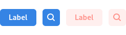

Buttons#
Buttons are one of the most common and basic user interface elements.
General Guidelines#
Follow the guidelines for buttons in header bars.
Outside of header bars, buttons should contain either an icon or a label, and not both.
Do not use more than one or two different widths of button in the same window, and ensure that buttons placed next to each other have the same width. This will give a better appearance.
Do not assign actions to double-clicking or right-clicking a button. Users are unlikely to discover these actions, and if they do, it will distort their expectations of other buttons.
Make invalid buttons insensitive, rather than showing an error message when the user clicks them.
Button labels should use imperative verbs, using header capitalization. For example, Save or Update.
Button labels should be short, in order to keep the button width narrow. Consider how labels will change width when localized.
Toggle Buttons#
Toggle buttons switch between two states, set and unset. This state is indicated by the button being either “pushed in” or “popped out”, respectively.
Toggle buttons are an appropriate choice for modes or settings which have an obvious binary nature. They are generally used when space is limited, as an alternative to switches.
Toggle buttons can also be linked, to create a control for selecting one of a series of options. This approach is appropriate when the available options are not binary in nature and the options available can be expressed with short labels.
Linked toggle buttons are primarily used to fit an option into a relatively short space, such as a list row or header bar. When space isn’t a limiting factor, other options such as radio buttons might be a better choice.
A linked toggle button example can be found in the Flap demo in the LibAdwaita demo app.
Button Styles#
A number of predefined styles are available for buttons, which allows them to be adapted for a range of situations. It is also possible to create custom button styles, particularly to give them custom colors (see UI Styling).
Suggested & Destructive Actions#
The suggested action and destructive action styles give buttons a strong color which conveys meaning.
Suggested action highlights a button for affirmative action. This can be used to draw attention to the next step in a process or a call to action.
Destructive action is a warning - it draws attention to the potentially damaging consequences of using a button.
Each view should only ever include a single button using either the suggested or destructive styles.
Alternative Shapes#
The pill and circular styles change the shape of a button. Pill can be used when a text button is situated in open space, and is a primary action for the view. Here the larger rounder shape helps to accommodate the button to its surroundings, as well as making it a more inviting click target.
Circular buttons are less common, but can be useful in situations where a number of smaller buttons are positioned in close proximity.